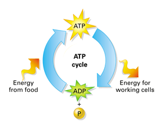

Exercise Science
Table of Contents
General Terminology
Endurance
Fatigue in Ultrarunning
Human evolutionary advantages
Molecular Energy Sources
Fat
Carbohydrates
Proteins
ATP
Performance Tripod
VO2 Max
Movement Economy
Lactate Threshold
Metabolic Terminology
Metabolism
Mitochondria
Two metabolic pathways
Aerobic metabolism
Anaerobic metabolism (aka glycolysis)
Pyruvate
Slow twitch muscles
References
continue on AeT p. 44
General Terminology
Endurance
- The maximum sustainable work rate an athlete can keep for the duration of an event before fatigue starts to slow the work rate
Fatigue in Ultrarunning
- Reduced stride length and/or slower stride rate
Human evolutionary advantages
- Can store huge quantities of fat. Fat = caloric fuel tank for excess calories consumed during plentiful times
- Go multiple days between meals as a result
- Recover muscle glycogen quickly: hours of rest instead of days
- Good for hunting. Run prey to exhaustion
Molecular Energy Sources
Fat
- Contains lots of bonds with usable energy
- Even a lean endurance athlete can carry 100,000 calories in accessible fat
Carbohydrates
- Simpler molecules with less energy in their bonds
- We can only store about 2,000 calories of carbs at a time
- Contain about half the calories per gram as fat
Proteins
- Used primarily as a structural component of bio molecules
- Build/repair muscle tissue, used to create antibodies and white blood cells (immune health), creates hormones/enzymes/red blood cells, and contributes to structure of organs/bones/skin/hair
- Used for fuel only as a last resort
ATP
- Adenosine Triphosphate: a short-term energy-storage molecule used by every cell in the body
- The energy released when ATP bonds are broken is what powers all life; as such ATP is used to power muscular contractions
- Ultimately fats and carbs provide energy to assemble ATP
- Endurance athletes go through a high turnover of ATP
Performance Tripod
Consists of the following 3 components:
VO2 Max
- Maximum volume of oxygen you can take up and use during exercise
- Units:
- Dependent on:
- Heart’s output
- Oxygen utilization of muscles
- Values for untrained men/women: 35-40 mL/kg/min and 25-30 mL/kg/min
- Values for highly trained men/women: 90-95 mL/kg/min and 75-80 mL/kg/min
- Fun fact: top racehorses 180 mL/kg/min, hummingbird 600 mL/kg/min, honey bee 6,000 mL/kg/min
Movement Economy
- How much energy it costs you to move your body a certain distance
- Consists of a mechanical (technique) component and a metabolic component
Lactate Threshold
- Maximum work rate you can sustain for a long duration - i.e. pace you can sustain for 30-60 minutes
- The pace at LT is the best way to predict endurance performance
Metabolic Terminology
Metabolism
- Biochemical process of breaking down molecular bonds from fats/sugars to provide the energy needed to create ATP
[a]
Mitochondria
- Small organelles in every cell (except for blood cells): they are factories that produce ATP with the help of oxygen
Two metabolic pathways
- There are two ways ATP is produced:
- Aerobic Metabolism
- Anaerobic Glycolysis
- Note: each gives a different quantity of ATP per unit fuel consumed
- Note: each has a maximum capacity; training can increase that maximum
Aerobic metabolism
- Uses pyruvate (leftover from anaerobic process) and fat to make additional ATP
- Produces 17x more ATP than the anaerobic path but is a much slower and more complex process
- Can also use protein but protein contributes much less
Anaerobic metabolism (aka glycolysis)
- The way we get fueled by carbohydrates
- Used when ATP demands exceed what aerobic metabolism can provide
- A 10-step process that breaks apart glycogen; does not require oxygen
- The liver converts sugars into glucose and then that glucose is either:
- Used immediately
- Stored in the muscles/liver as glycogen for later use
- Results in the creation of a pyruvate molecule with two ATP’s on it; the ATP molecules are readily available as energy
Pyruvate
- The end product of glycolysis (anaerobic metabolism) - it goes down one of two paths:
- Gets transported into the mitochondria to help produce a lot more ATP via aerobic metabolism → GOOD
- Can sit outside the mitochondria and produce lactic acid → BAD
Lactic acid
- Molecule that gets formed from pyruvate and then immediately dissociates into a lactate molecule + a hydrogen Ion
- The hydrogen Ion upsets the acid/base balance in the cell, causing a temporary reduction of glycolytic ATP production → fatigue
Aerobic vs. anaerobic capacity
- This determines the path the pyruvate molecule takes
- When aerobic, the athlete’s pyruvate production is small enough that most/all of it can be taken into the aerobic pathway because there’s enough mitochondrial capacity to do so. Minimal lactic acid gets created as a result
- When anaerobic, the athlete does not have enough aerobic capacity to move all the pyruvate (made during glycolysis) into the mitochondria → lactic acid builds up
Endurance (from a metabolic standpoint)
- The ability to sustain rapid ATP production for long durations
- The end goal of endurance is to encourage that pyruvate molecule to go into the mitochondria and undergo aerobic metabolism
Aerobic threshold
- Aerobic threshold: intensity of work at which lactate rises 1mMol/L above baseline levels
- Usually determined by a lab test
Lactate threshold
- Intensity of work at which lactate production exceeds its rate of removal into the mitochondria
- Exercise can only be sustained for a few minutes before fatigue causes you to slow down
Slow twitch vs. fast twitch muscles
- Slow twitch: Higher concentration of mitochondria in them, which makes them more fatigue resistant
- Fast twitch: fibers that contract with more force and are used when extra force is needed
- They get fatigued quicker because they don’t have as many mitochondria
- They require primarily on glycolysis, which produces a lot more pyruvate
References
[a]https://bodell.mtchs.org/OnlineBio/BIOCD/text/chapter7/concept7.3.html